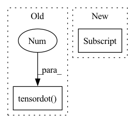

Pattern ID :40868
Before Change
scalars = self.vector_kernels
if self.learn_vector_projection:
scalars = [self.math.tensordot( v, kernel, 1 ) + self.vector_biases[i]
for i, (v, kernel) in
enumerate(zip(input_values, self.vector_kernels))]
After Change
def _covariants(self, covariants_):
if self.input_vector_count == 1:
return covariants_[0]
covariants = [
vec*self.vector_kernels[i] for (i, vec) in enumerate(covariants_)]
return sum(covariants)In pattern: SUPERPATTERN
Frequency: 3
Non-data size: 2
Instances Fragment ID: 115275038
Project Name: klarh/geometric_algebra_attention
Commit Name: 753ff98f403196c354fbc5b227f5e75d3aeae9bf
Time: 2021-10-01
Author: mspells@vectorinstitute.ai
File Name: geometric_algebra_attention/base/Vector2VectorAttention.py
M Class Name: Vector2VectorAttention
N Class Name: Vector2VectorAttention
M Method Name: _covariants(2)
N Method Name: _covariants(6)
M Parent Class:
N Parent Class:
M File Name: geometric_algebra_attention/base/Vector2VectorAttention.py
N File Name: geometric_algebra_attention/base/Vector2VectorAttention.py
M Start Line: 40
M End Line: 59
N Start Line: 23
N End Line: 28
Before Change
[0, -1, 0, 0],
[1, 0, 0, 0]
], dtype=b.dtype)
return jnp.tensordot( b, swizzle, 1 )
def vecvec(a, b):
vector*vector -> scalar + bivector
After Change
bivector) with basis (1, e12, e13, e23).
return b[..., ::-1] *jnp.asarray((1, -1, 1, -1), dtype=b.dtype)
def trivec_dual(t):
vector + trivector -> scalar + bivector Fragment ID: 115275036
Project Name: klarh/geometric_algebra_attention
Commit Name: 2a13a2787728455bb625afb8d28e7a467679de21
Time: 2023-04-18
Author: mspells@vectorinstitute.ai
File Name: geometric_algebra_attention/jax/geometric_algebra.py
M Class Name: AnonimousClass
N Class Name: AnonimousClass
M Method Name: bivec_dual(1)
N Method Name: bivec_dual(1)
M Parent Class:
N Parent Class:
M File Name: geometric_algebra_attention/jax/geometric_algebra.py
N File Name: geometric_algebra_attention/jax/geometric_algebra.py
M Start Line: 25
M End Line: 31
N Start Line: 25
N End Line: 25
Before Change
[0, -1, 0, 0],
[1, 0, 0, 0]
], dtype=b.dtype)
return tf.tensordot( b, swizzle, 1 )
def vecvec(a, b):
vector*vector -> scalar + bivector
After Change
bivector) with basis (1, e12, e13, e23).
return b[..., ::-1] *(1, -1, 1, -1)
def trivec_dual(t):
vector + trivector -> scalar + bivector Fragment ID: 115275034
Project Name: klarh/geometric_algebra_attention
Commit Name: 2a13a2787728455bb625afb8d28e7a467679de21
Time: 2023-04-18
Author: mspells@vectorinstitute.ai
File Name: geometric_algebra_attention/tensorflow/geometric_algebra.py
M Class Name: AnonimousClass
N Class Name: AnonimousClass
M Method Name: bivec_dual(1)
N Method Name: bivec_dual(1)
M Parent Class:
N Parent Class:
M File Name: geometric_algebra_attention/tensorflow/geometric_algebra.py
N File Name: geometric_algebra_attention/tensorflow/geometric_algebra.py
M Start Line: 22
M End Line: 28
N Start Line: 22
N End Line: 22